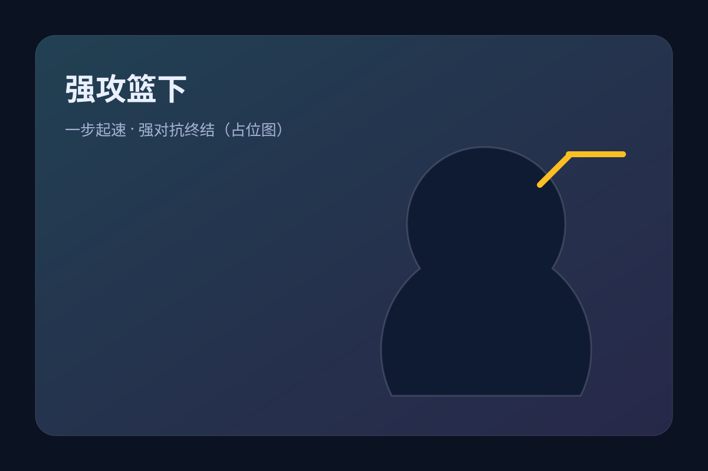
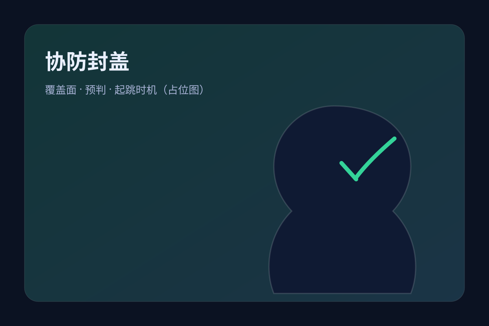
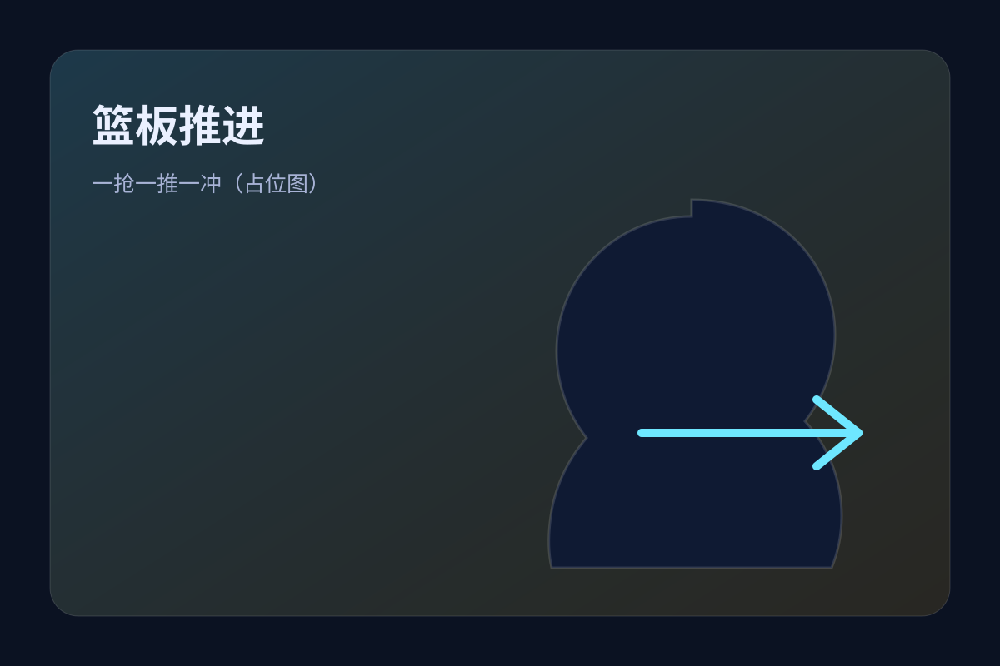
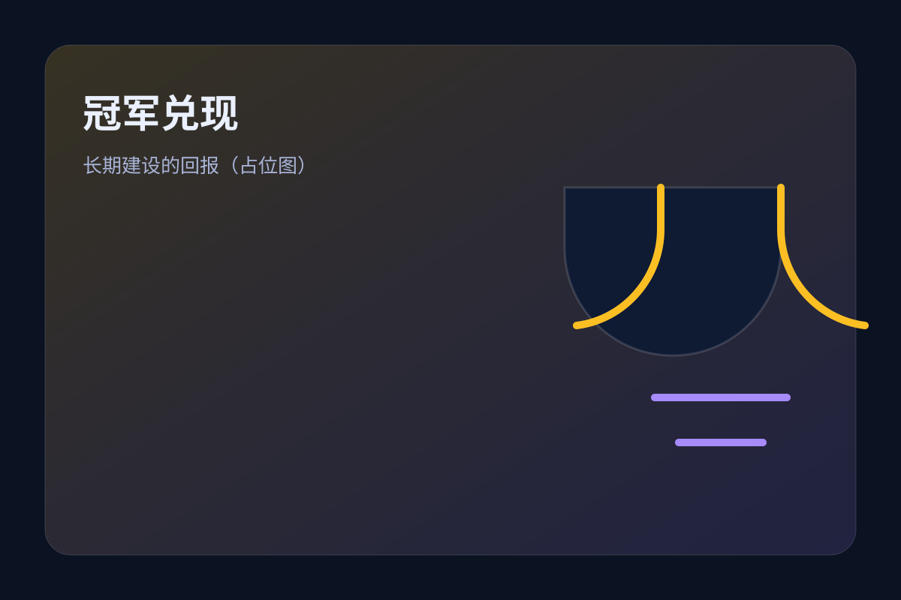

身份标签
- 昵称：字母哥 / “希腊怪兽”
- 球队：密尔沃基雄鹿（长期核心）
- 位置：前锋（可摇摆至中锋）
- 风格：冲击篮筐、攻防转换、护框协防
在画布上按住拖拽瞄准，松手投篮。每局 10 球，进球得分。
他是现代篮球“纵向冲击力 + 防守覆盖面”的代表：能在转换中像后卫一样推进，在阵地战以长步幅与力量碾压篮下， 同时又能从一防到五、完成协防补位与篮板保护。
字母哥的“传奇感”不只来自奖杯，更来自他一路靠训练与心态升级，把天赋变成可复制的统治力。
他出生于希腊雅典，家庭生活并不富裕。少年时期的经历，让他对“机会”极度珍惜，也塑造了他著名的自律与勤奋。
这份韧性在职业生涯里表现为：输球后更早到训练馆、伤病后更谨慎地重建、以及不断扩展进攻武器库。
2013 年他以首轮第 15 顺位被雄鹿选中。新秀时期体型偏瘦，但控运与视野已经显露：他能像后卫一样推进球， 也能像内线一样终结与护框。
雄鹿选择“长期培养 + 核心围绕”，而他用逐年提升的对抗、效率与防守影响力回报信任。
当他在持球冲击、低位强打、短策应与防守端的协防覆盖都成体系后，“联盟最难防的人之一”便成为共识。 2021 年，他用总决赛级别的表现把“天赋 + 努力”写进冠军史。
他的价值不只在得分：篮板、防守轮转、推动节奏、吸引夹击后的出球，都能直接改变比赛结构。
用下面的筛选器快速浏览不同主题：奖项、季后赛、成长节点、伤病与回归等。数据为介绍站整理口径，适合快速理解脉络。
从欧洲联赛进入 NBA，开启长期培养路线：体型、力量与比赛理解逐年升级。
逐步承担推进、组织与终结的复合任务，“前场持球推进 + 篮下终结 + 防守覆盖”成为标志。
以高效率篮下冲击与防守端影响力成为联盟顶级：转换、突破、护框与篮板一体化。
进攻端压迫篮下，防守端扫荡协防，成为“体系上限”的代名词：他在场，雄鹿攻防都更简单。
用统治级篮下终结、关键防守回合与强对抗得分带队登顶，兑现“把球队扛到终点”的承诺。
在高强度冲击型打法下，学会更精细地控制节奏：更多短策应、挡拆顺下、以及减少低概率出手。
现代球星的“升级路线”不只在技术，更在决策：何时冲击、何时分球、何时作为掩护者参与战术。
把字母哥看作一套“攻防系统”：当他启动，比赛会被拉进他更擅长的空间、速度与对抗维度。
抢下篮板后快速推进，逼迫对手在回防中选择“守篮下”还是“顾外线”。他擅长利用长步与力量直接吃掉身体接触。
当对手收缩护框，他的出球（短传、手递手、弱侧转移）会制造空位；当对手不收缩，他就直攻篮下完成高效终结。
既能护框也能外线换防，协防补位速度快，常用“延误 + 回收”影响对手进攻节奏；篮板保护也让雄鹿更易打出反击。
这不是官方评分，只是帮助你直观理解他的强项结构。
这里列出字母哥最具代表性的团队与个人荣誉（不追求穷尽），更像一面“成就墙”，让你一眼看到他的高度。
把个人统治力转换成最终结果，是超巨最重要的证明之一。
持续一个赛季的稳定输出与带队能力，说明他的体系价值与地板、天花板。
攻防双向影响比赛：换防、协防、护框与篮板，覆盖面罕见。
在最高舞台把强项放大到极致，让对手的防守策略“失效”。
长期在联盟顶层区间：既是进攻核心，也是防守支柱。
真正的强者不只“爆发一次”，而是多年保持高强度与高效率。
与其背一堆数字，不如记住他的比赛“形状”：高频冲击篮下、制造犯规、抢篮板推进、以及防守端的覆盖与干扰。
对手用多人收缩限制突破路线，迫使他在拥挤空间处理球。破解方式通常是更快的传导、弱侧射手站位、以及他更耐心的短策应。
通过机动性限制他第一步，并在护框位置保持人数。破解依赖队友的外线惩罚与他作为掩护者/顺下点的效率。
对手故意放一步中远投，减少篮下协防压力。破解在于他选择更高质量出手、提升罚球与中距离稳定性，以及通过更深的冲击把防线压回去。
如果你希望我把这里改成“真实赛季数据表格（逐年）”，告诉我你要覆盖到哪个赛季，我可以把表格做得更像百科级别。
不追求“每一球都列”，而是挑几类最能代表字母哥气质的瞬间：冲击、对抗、关键回合与团队价值。

他的突破常以“长步 + 肩部对抗”完成空间创造，终结则是扣篮、上篮、或强行造成犯规。

他的防守价值经常体现在“你以为有空位，但他突然出现”的瞬间：补位、干扰、封盖与回收都很快。

抢下篮板立即推进能最大化他的速度优势，也让对手很难落位形成防守结构。

留队、成长、再冲击——这条路径让他的冠军更具叙事张力：不是“捷径”，而是长期建设的回报。
目前图集使用离线可用的 SVG 海报占位图。你把真实图片放进 assets/（如 JPG/PNG/WebP），并替换下面的 src 即可。
离线：你可以把视频文件放进 assets/ 并使用 <video> 播放；在线：也可以直接嵌入 YouTube（下方示例）。
说明：由于我无法直接在你电脑里下载真实视频文件，这里先留好播放器与命名规范；你放入 MP4 后即可离线播放。
如果你希望我替你换成“更经典/更准确”的链接：告诉我你想要的主题（例如 2021 总决赛 G6、关键封盖、单场集锦）。
我可以继续扩展：逐年赛季数据表、对阵分布、季后赛系列赛索引、荣誉全列表、训练方法拆解、以及更多图片/视频嵌入位。
把常见疑问放在一起，便于快速入门。
因为他的姓氏 “Antetokounmpo” 对很多球迷来说太长、太难读，中文圈常用“字母哥”作为昵称，简单好记。
在高速度下保持强对抗终结，同时具备极强的防守覆盖：能护框、能换防、能抢篮板发动反击。攻防两端都能改变战术结构。
因为他经常以篮板推进、转换强攻把比赛拉进快节奏，对手很难落位。节奏一快，防守沟通与轮转难度都会显著增加。
一般讨论集中在中远投与罚球稳定性，以及在高强度季后赛里对“摆大墙”策略的破解效率（更快更稳的决策与出球）。
本站是“球迷介绍站”风格页面：重点在结构化理解与阅读体验。如果你要严格到每年每项数据的权威引用，我可以帮你补上引用来源与可核对链接位（并按你希望的赛季范围生成表格）。